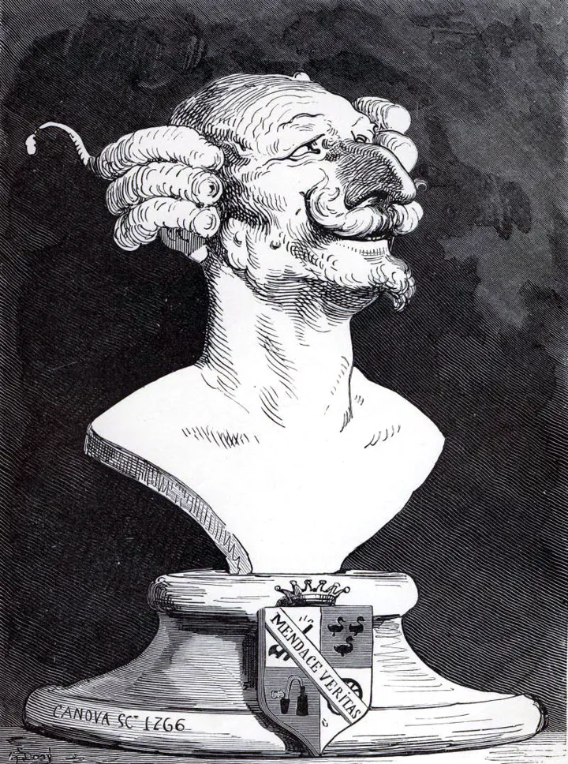

Run any model, and check its answer before you rely on it.
Flywheel runs AI tasks with the model you choose and checks each answer against the record it came from. A wrong answer is held before your team acts on it.

The baron's trick
The baron said he pulled himself out of the swamp by his own hair. A model that grades its own answer tells the same story.
So Flywheel never lets the model accept itself. A check outside the model, a test run or a source comparison, decides.1
In the niche: Gustave Doré's bust of the baron, 1862. The motto on the plinth reads Mendace veritas, truth through lying. Public domain.
Check one number
The test record says 41 passed. Three answers came back. Open a door and see what the checker decided.
tests_passed: 42, source: the test record
Fail, held
The value disagrees with the record.
tests_passed: 41, source: the test record
Pass, released
The value agrees with the record.
tests_passed: 41, no source
Unverifiable, held
The value agrees, and the answer does not say where it came from.
Captured checker output from the Flywheel demo.
How an answer gets accepted
- Model proposesCheap and replaceable. Ask it for more candidates and the pool widens.
- Outside checkNo learned model on this step. It accepts or rejects.
- ReceiptNamed by a fingerprint of its contents. Anyone can re-check it offline.
- Stronger tierWhen the budget runs out, Flywheel names one. You decide whether to call it.
- Proof cachePassed answers are re-checked before they are served again.
Same check, two hands
In yours
A green tick you can take apart: the record, the check and the receipt.
In the wrong ones
A green tick that launders a false result.
What keeps it in yours: the check runs outside the model, the checker never certifies itself, and a corpus of known false answers tests the checker on every release.
Install it
pip install flywheel-verify flywheel up
The core package needs only the Python standard library. Use hosted models with your keys, or run offline against local weights. Source on GitHub, FSL-1.1-MIT.
Notes
- The regress has a name: the Münchhausen trilemma, from Hans Albert, Treatise on Critical Reason, 1968. Every justification ends in a circle, an endless regress or a stop by decree. Back